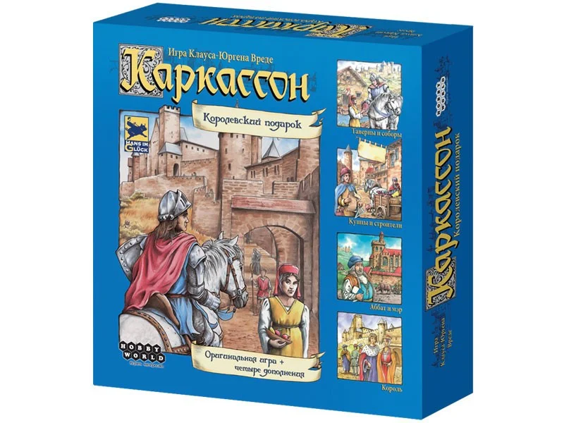
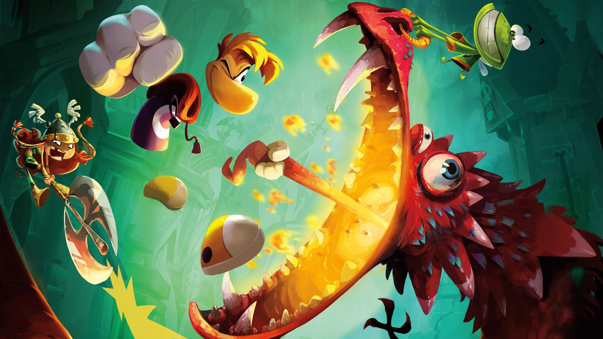
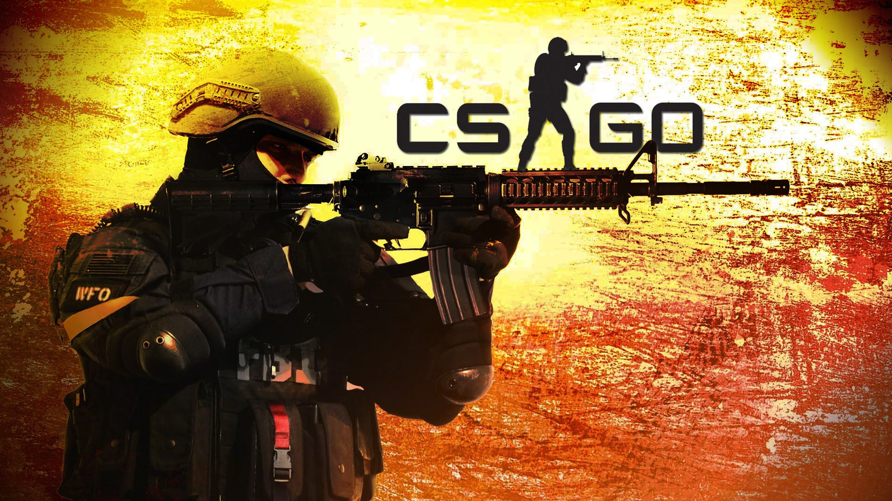

Закат отличается от сумерек, которые делятся на три этапа, первый из которых — гражданские сумерки, которые
начинаются, как только Солнце исчезло за горизонтом, и продолжаются, пока оно не опускается
до 6 градусов ниже горизонта, второй этап — морских сумерки, между 6 и 12 градусов ниже горизонта;
и третий — астрономические сумерки — это время, когда Солнце находится
от 12 до 18 градусов ниже горизонта, и это самый темный момент сумерек (непосредственно перед ночью).
Ночь наступает, когда Солнце достигает 18 градусов ниже горизонта и больше не освещает небо.[2]
В местах, расположенных севернее Северного Полярного круга и южнее Южного Полярного круга, может наблюдаться
явление «Полярный день», когда Солнце не заходит за горизонт дольше 1 суток.
Моя семья
Кем является для меня
Имя
Возраст
Мама
Маргарита
35-36 лет
Папа
Андрей
35-36 лет
Брат
Родион
5-6 лет
Сестра
Вика
1-2 года
Мои любимые игры

Каркасон
Игра заключается в пошаговом собирании игрового поля и
размещении на нём фишек. В зависимости
от того на какую местность поставлена фишка она становится
рыцарем,крестьянином,монахом и разбойником.

Rayman-legends
Геймплей игры — игрок спасает сказочные миры от наводнивших их кошмаров:
вместе с друзьями они скачет по платформам и проходит уровни, собирает люмы,
освобождает от заточения малюток,входит в комнаты-испытания для
решения головоломок.

CS:GO
Как и в остальных играх серии, в Counter-Strike:
Global Offensive игроки делятся на две команды:
террористов и спецназа специального назначения,
после чего сражаются друг с другом в серии раундов.
HIIL CLIMB
Цель игрока — собирать монеты во время
движения на автомобиле. При движении
тратится топливо.Чтобы пополнить запас топлива,
необходимо собрать предметы внутри игры.
 Закат отличается от сумерек, которые делятся на три этапа, первый из которых — гражданские сумерки, которые
начинаются, как только Солнце исчезло за горизонтом, и продолжаются, пока оно не опускается
до 6 градусов ниже горизонта, второй этап — морских сумерки, между 6 и 12 градусов ниже горизонта;
и третий — астрономические сумерки — это время, когда Солнце находится
от 12 до 18 градусов ниже горизонта, и это самый темный момент сумерек (непосредственно перед ночью).
Ночь наступает, когда Солнце достигает 18 градусов ниже горизонта и больше не освещает небо.[2]
В местах, расположенных севернее Северного Полярного круга и южнее Южного Полярного круга, может наблюдаться
явление «Полярный день», когда Солнце не заходит за горизонт дольше 1 суток.
Закат отличается от сумерек, которые делятся на три этапа, первый из которых — гражданские сумерки, которые
начинаются, как только Солнце исчезло за горизонтом, и продолжаются, пока оно не опускается
до 6 градусов ниже горизонта, второй этап — морских сумерки, между 6 и 12 градусов ниже горизонта;
и третий — астрономические сумерки — это время, когда Солнце находится
от 12 до 18 градусов ниже горизонта, и это самый темный момент сумерек (непосредственно перед ночью).
Ночь наступает, когда Солнце достигает 18 градусов ниже горизонта и больше не освещает небо.[2]
В местах, расположенных севернее Северного Полярного круга и южнее Южного Полярного круга, может наблюдаться
явление «Полярный день», когда Солнце не заходит за горизонт дольше 1 суток.
 HIIL CLIMB
Цель игрока — собирать монеты во время
движения на автомобиле. При движении
тратится топливо.Чтобы пополнить запас топлива,
необходимо собрать предметы внутри игры.
HIIL CLIMB
Цель игрока — собирать монеты во время
движения на автомобиле. При движении
тратится топливо.Чтобы пополнить запас топлива,
необходимо собрать предметы внутри игры.
 Бабочки
Бабочки